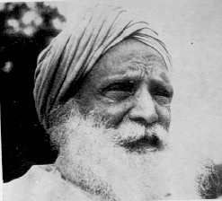

Other historical photographs in this web site
Most of the photos displayed here illustrate mainly Sikh immigration owing to the fact that early settlement from Punjab was predominantly Sikh. In the early part of this century all immigrants from India were indiscriminately called "hindoo" or "hindu" regardless of religious affiliation. The term "hindoo" was also sometimes used in a pejorative sense for anyone from that continent. Permission to reproduce any of these photographs must first be obtained from the archive shown in the photo credits.
Please contact T. S. Sibia
Return to home page
[1] Sikh Temple, Hong Kong. 1901. Many passengers lived in the Gurdwara for years before jouneying to Canada. All prayed in this Gurdwara before the Komagata Maru departed in 1914. (photo by author, 1998)
[2] Dedicatory plaque is on the first floor of the Hong Kong Sikh Temple which opened in 1901.
The inscription reads: "Siri Guru Singh Sabah", the name of the organization which managed the affairs of the Sikh Temple when it opened in 1901. Later the sponsoring organization's name changed to
Khalsa Diwan Society. The inscription is in romanized Punjabi and Punjabi script. (photo by author, 1998)
[3] 1914. The Komagata Maru in Vancouver harbor, surrounded by police boats.
Click on picture to obtain a larger image.
[4] 1914. Sikhs aboard the "Komagata Maru". Gurdit Singh is wearing the light-colored suit, white beard, at the time of the Komagata Maru incident, 1914. (Photo VPL 136, Courtesy VPL.)
Click on picture to obtain a larger image.
[5] 1914. Sikhs aboard the Komagata Maru. 1914. Gurdit Singh is on the left in the light-colored suit. (Photo VPL 6231 Courtesy VPL.)
Poster for the Punjabi American Festival 2005. http://www.continuousjourney.com
|  |
[6] Gurdit Singh, Hero of the Komagata Maru.
[7] 1914. Man climbing onboard the "Komagata Maru" in Vancouver harbor. (CVA 141-1 courtesy City of Vancouver Archives.)
Click on picture to obtain a larger image.
[8] 1914. Awaiting immigration clearance aboard the Komagata Maru. ( Photo VPL 6232 Courtesy VPL.)
Click on picture to obtain a larger image.
[9] 1914. Passengers and crew at the rails of the "Komagata Maru". (CVA 141-3 Courtesy City of Vancouver Archives.)
Click thumbnail image to view larger image
[10] Memorial plaque in Vancouver, B.C.,
commemorating the Komagata Maru incident. (Photo by author)
Click thumbnail image to view larger image
[11] Memorial plaque in Vancouver, B.C. Gurdwara
commemorating the Komagata Maru incident.(Photo by author)
[12] S.S. Komogata Maru July 1914; passenges aboard ship and three observers on wharf. (By permission of City of Vancouver Archives agreement 7309 photo #CVA 7-125)
[13] S.S. Komogata Maru July 1914 passengers aboard ship (By permission City of Vancouver Archives agreement 7309 photo #CVA 7-124)
[13] S.S. Komogata Maru July 1914 passengers aboard ship (By permission City of Vancouver Archives agreement 7309 photo #CVA 7-122)

By permission City of Vancouver Archives photo #CVA 7-126)

By permission City of Vancouver Archives photo #CVA 7-127)

By permission City of Vancouver Archives photo #CVA 7-128)

By permission City of Vancouver Archives photo #CVA 7-129)

By permission City of Vancouver Archives photo #CVA 7-130)

By permission City of Vancouver Archives photo #CVA 7-131)

By permission City of Vancouver Archives photo #CVA 7-132)

By permission City of Vancouver Archives photo #CVA 7-133)

By permission City of Vancouver Archives photo #CVA 300-24)


Latest Discovery.
Rock Thrown from Komogata Maru to Sea Lion
Photo by Author 06/05 at Vancouver Museum
Contact T.S. Sibia
tssibia@sikhpioneers.net
{kind=link}
{kind=link}
{kind=link}
{kind=link}
{kind=link}
{kind=link}
{kind=link}
{kind=link}
{kind=link}
{kind=link}
{kind=link}
{kind=link}
{kind=link}